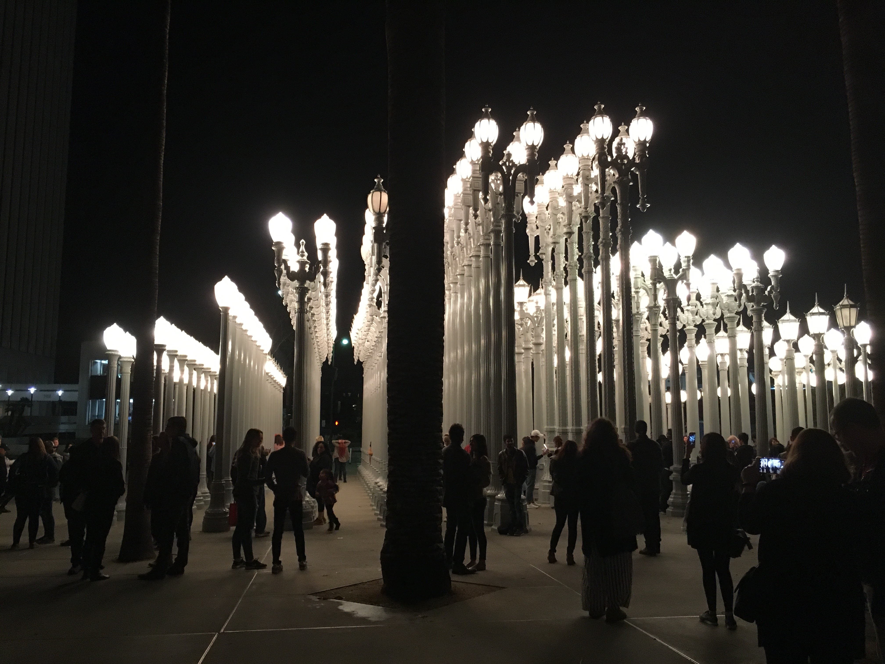

What I Did Last Weekend
Lake Tahoe
Finally crossed off one of the biggest items on my bucketlist which was a trip to Tahoe with some friends. We had planned it for two weeks ago but some questionable weather forced us to go this weekend. Took my minivan for another road trip and got to really test out my road trip playlist, though I got mixed reviews. Learned I cannot see at all in the dark so driving was a bit scary but not too challenging if you know how to use your gears. Took the group gambling and showed them the proper roulette strategy, though some people do not seem to enjoy as much as I do. I guess I do have an addictive personality. Went to Peak nightclub which is considered the best in Tahoe but it was lame. The next day we planned on heading up to Heavenly but I noticed people were walking away from the resort as we got closer. Turns out the Gondolas were closed so we had to find another way up the mountain. Could have made a killing as an uber driver but we ended up driving to Stagecoach and rented our gear and bought lift tickets. Eric did not go snowboarding with us so he drove my car back down and somehow made it back without getting into an accident. Tickets were expensive for a half day so I decided to forgo a helmet which was a huge mistake. Heavenly has a weird design where its a lot of trials and blue/black routes. Makes it difficult for beginners and hard for snowboarders to get around. It was Jacobo's first time so he wiped out a lot, pretty funny though. He almost fell off the cliff too since he could not turn right. During one run, I went too fast and the back of my board caught too much air and flipped me over. Hit my head pretty hard and messed up my knee. That's why you wear a helmet... Overall, really great trip and glad that I was able to pull it off.
Los Angeles
Decided to go down to Los Angeles for the 3 day weekend since I wanted to get out of Berkeley and never had the chance to explore the area. I really enjoy road trips since it is a great time time just talk and karaoke with a group of friends, though I do not always enjoy driving. We went during one of the worst storms and it really tested my driving skills. My windshield wiper was blown off and we had to replace it at a gas station. Quite the test of ingenuity as Joel and I struggled to replace it during 50 mph winds. It got worse later on as visibility was near zero but thankfully we made it through with a lot of luck. Had El Salvadorian food for the first time and it was really good. Los Angeles is known for their cheap hispanic food according to some of my friends. Ended the night going to Koreatown for a karaoke session which was a blast and something that I definently want to do more of. It is great when everyone gets into a song and sings together. I want to have some more karaoke sessions and might host some at my apartment later on.
Journaling
I signed up for a couple classes that require me to engage in weekly journaling and creative writing for my last semester. Now that it is my last semester, I wanted to dedicate more time to the creative projects that I started earlier in college. I will probably write about some of the things going on in my life because I am doing that anyways, the places I eat at, the movies I watch, and maybe even the dreams that I have.
CMYK Designathon

When to the CMYK Designathon this weekend. The event started a lot earlier than I would have liked and more than half the time was dediated to learning about the judges' backgrounds and our prompt. All of the judges were very legit with extremely stellar portfolios/work experience. I think their expertise in design made them better judges compared to those that were at the S.E.E. Designathon. There were 3 prompts but I cannot remember all of them. My group chose number 3 which was the design and market a new shampoo line for Sierra Nevada Pale Ale.
You can check out my project here! or in my projects section of my website.
Cal Hacks 2.0
Went to my first hackathon this weekend. To be honest was not really expecting to make anything. Low key wanted the free food, goodies, and drinks. I was about to just hangout with UnBoard and watch them work on The Resistance but I just had the urge to make something. I have no coding experience whatsoever besides CS10 (would not recommend) but Google is the greatest teacher alive.
You can check out my project here! or in my projects section of my website.